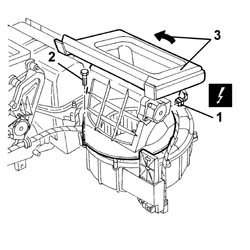
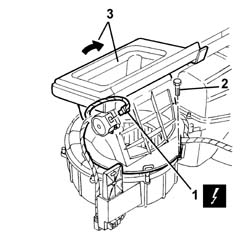
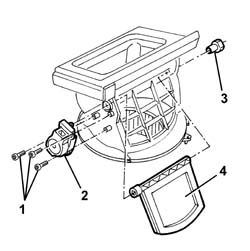

5040C80 AIR INTAKE AND RECIRCULATION FLAP - R R WITH AIR CONDITIONING HOUSING DISCONNECTED
- Path
- Procedures > 50 AUXILIARY UNITS > 5040 AIR CONDITIONING CASING AND COMPONENTS > 5040C AIR CONDITIONER BOX AND COMPONENTS > 5040C80 AIR INTAKE AND RECIRCULATION FLAP - R R WITH AIR CONDITIONING HOUSING DISCONNECTED
- Kind
- repair procedure (removal / refitting; the operation number is the code)
- Applies to
- engines: 2.0 JTS, 3.2 V6, 1.9 JTD 16V; all production periods
- Interactive page
- https://sloeber94.github.io/elrnDB-aGt/en/#/125001546
Applies to: engines: 2.0 JTS, 3.2 V6, 1.9 JTD 16V; all production periods
 Removing
Removing
 Refitting
Refitting1. Disconnect the electrical connection for the air recirculation and intake motor.
Name | Connector | |
|---|---|---|
1 | Air intake actuator | See N82 OUTSIDE / RECIRCULATION AIR INTAKE FLAP ACTUATOR |
2. Undo the bolt.
3. Rotate the air recirculation and intake assembly and remove it.

Applies to: engines: 2.0 JTS, 3.2 V6, 1.9 JTD 16V; all production periods
Refitting
RemovingCheck that the air recirculation and intake flap is not damaged.
Position and rotate the air recirculation and intake assembly and secure it using the bolt.
Connect the electrical connection for the air recirculation and intake motor.
Applies to: engines: 2.0 JTS, 3.2 V6, 1.9 JTD 16V; all production periods; only with equipment: Right hand drive
Removing
Refitting1. Disconnect the electrical connection for the air recirculation and intake motor.
Name | Connector | |
|---|---|---|
1 | Air intake actuator | See N82 OUTSIDE / RECIRCULATION AIR INTAKE FLAP ACTUATOR |
2. Undo the bolt.
3. Rotate the air recirculation and intake assembly and remove it.

Applies to: engines: 2.0 JTS, 3.2 V6, 1.9 JTD 16V; all production periods; only with equipment: Right hand drive
1. Undo the bolts.
2. Remove the motor.
3. Remove the bush after releasing its inner retainer.
4. Remove the door.

Applies to: engines: 2.0 JTS, 3.2 V6, 1.9 JTD 16V; all production periods; only with equipment: Right hand drive
Refitting
RemovingCheck the flap is intact and undamaged.
Position the flap.
Fit the bush and engage its inner retainer.
Position the motor and secure with the bolts.
Position and rotate the air recirculation and intake assembly and secure it using the bolt.
Connect the electrical connection for the air recirculation and intake motor.